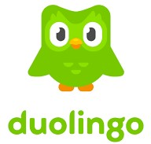

 Duolingo is a American language, learning app and website. People can learn different languages i.e. English, french, Spanish, Japanese, Chinese, Hindi, etc.it contains speaking lessons, writing lessons, etc. For interactive learning; different podcasts, stories are also included. in this website.Users can discuss their experience on Duolingo through forums and discussions.With game-like features, fun challenges, and reminders from Duo the owl, users are reminded about the lessons everyday.According to Wikipedia source, Duolingo offers 106 different language courses in 41 languages.
According to the data provided by wikipedia, Duolingo has 500 million registerd users.
According to website three missions of Duolingo are posted: Personalized Learning, Making learning fun and Easily accessible.